Built-in Effects Plugins¶
The Waveform built-in effects are really quite simple. They act as plugins that you can combine to build up more complex effects chains in the mixer, or within plugin racks. While we won't touch on every single effect here, we will go over the essential ones. Let's get started.
Waveform Effects¶
Drag the plugin object to the mixer and select Waveform Plugins. You'll see the list of built-in effects.
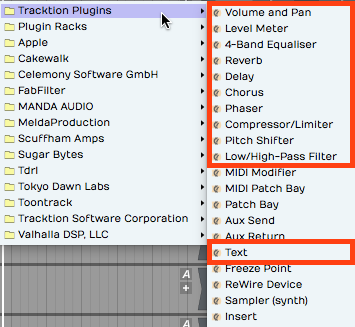
Built-in Plugin Effects in Waveform
In this chapter, we will go into more detail about the plugins hightailed in the image above. The other effects provide specialized functions, or are not typical audio effects. We'll get into some of those in later chapters.
Volume & Pan Plugin¶
Whenever you create a track, you will see a Volume & Pan plugin at the right in the mixer section. This gives you basic level and pan controls like you'd expect to find on any mixer channel. Since the Waveform mixer is made up of plugins, the Volume & Pan plugin can be moved before other plugins or deleted entirely. You can even add another Volume & Pan and use it as a trim control for gain staging.
Adjusting Volume - To control volume, click and drag the volume slider up and down. A large volume slider appears as drag giving you nice readable dB markings for fine level adjustment. The numeric value for Volume setting appears in properties.
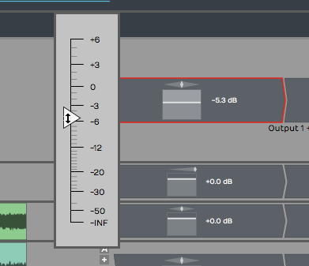
Volume & Pan Plugin, Adjusting Volume
Adjusting Panning - The pan adjustment works similarly. Click the panner graphic then drag left or right to adjust left to right stereo positioning.
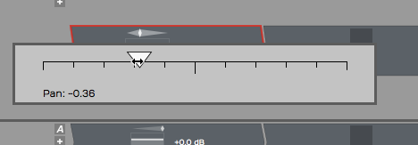
Volume & Pan Plugin, Adjusting Panning
Resetting Controls - To reset either Volume or Pan to their default position, hold down Opt / Alt as you click the control.
Properties - With a Volume & Pan plugin selected its values and actions appear in properties.
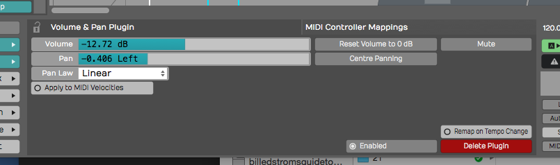
Volume & Pan Plugin properties
The Volume slider is repeated in properties along with buttons for Reset and Mute. Pan is repeated in properties along with a Centre Panning button that resets panning.
Pan Law - The properties also include a setting for Pan Law. By default this is set to Linear but you can change it to other popular formats. For example, many DAWs use a -3 dB pan law so that as you pan to the center it lowers the volume slightly to make it easier to keep a track in balance as you adjusting panning.
💡 Tip: To apply a velocity offset to notes going into a virtual instruments, insert a Volume & Pan plugin before it and enable Apply to MIDI velocities. Adjust the fader to offset MIDI velocity to increase or reduce the velocity. This is a quick way make your MIDI drums hit harder - much easier than going back to editing the MIDI data. This only works if you insert Volume & Pan ahead (to the left) of the virtual instrument.
Level Meter¶
The Level Meter plugin is also at the right end of the mixer for every track by default. Level Meter is stereo and shows what the left and right levels are doing.
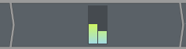
Level Meter Plugin
When you select a Level Meter, its properties display a large horizontal version of the meter, that also includes dB markings.
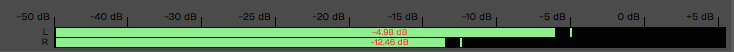
Large Meter in properties
The meter indicates signal overload with a red indicator at the top of the meter. You can reset the meter by clicking the red overload indicator.
💡 Tip: To clear all overload indicators in the Edit, right-click any level meter and choose Reset all overload indicators ( Backslash ).
By default the Level Meter is set to peak mode. This is typical of the metering in most DAWs. You may change the meter mode in properties or from the right-click menu. Here is an explanation of each of the modes:
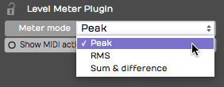
Meter Modes for the Level Meter Plugin
Peak Mode - Peak mode shows the digital peak. This is the normal mode for Waveform and most other DAWs. From a technical point of view, you want to keep this out of the red to prevent ugly digital clipping.
RMS Mode - To get a sense of the overall perceived volume your signal, try RMS mode; it emulates the response of legacy VU meters and gives you a better indication of how loud one track is perceived, compared to others.
Sum & Difference Mode - Sum & difference is a specialized mode that gives you a visual representation of both the level and the stereo spread. The left part of the meter shows the level of sum of left plus right. This represents the combined level of the stereo signal.
The right side of the meter shows the difference between left and right. The more difference you see the wider the stereo spread between the two channels. This gives you a visual indication of stereo spread. If both channels are playing exactly the same thing, then left minus right will cancel to zero and the right side of the meter will show no activity: a mono signal.
💡 Tip: The level meter will also indicate MIDI activity if you enable Show MIDI activity in properties. This can be a very useful diagnostic if you ever wonder why a virtual instrument is not triggering.
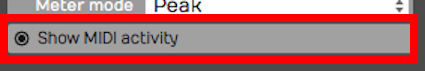
Level Meter, Show MIDI activity**
Equalisers¶
Waveform's equalisers come in three sizes — 1-Band, 3-Band, and 8-Band — so you can reach for exactly as much EQ as the job needs. Each one has a graphical frequency-response display in properties where you drag nodes to shape the sound: drag a node up or down for Gain, left or right for Frequency, and around the node to set its Q (width).
1-Band Equaliser is the smallest — a single band you can set to a bell or a shelf. It's perfect for a quick surgical cut or a gentle tone tweak without the clutter of a full EQ.

The 1-Band Equaliser
3-Band Equaliser gives you a low shelf, a sweepable mid bell, and a high shelf — the classic three-band tone stack. Set the Frequency and Gain of each band by dragging its node.

The 3-Band Equaliser
8-Band Equaliser is the full parametric EQ. It has eight bands — a low shelf, six peaking bands, and a high shelf — each with its own Frequency, Gain, and Q, and each able to be switched on or off individually. It also offers a Stereo or Mid/Side mode: in Mid/Side mode you equalise the centre (mono) and the sides (stereo) of the signal independently, which is handy for mastering and stereo-width work.

The 8-Band Equaliser
📝 Note: The older 4-Band Equalizer from earlier versions now lives in the Legacy folder. See the Legacy Plugins chapter if you need it to open an old project.
Reverbs¶
Waveform includes three algorithmic reverbs, each tuned for a different kind of space: Natural Reverb, Plate Reverb, and Non-linear Reverb. They share the same set of controls, so once you learn one you know them all.
- Natural Reverb models real rooms and halls — the go-to for adding believable depth and ambience to a track.
- Plate Reverb recreates the bright, dense sound of a classic studio plate, a long-time favourite on vocals and snares.
- Non-linear Reverb is a gated/non-linear effect whose tail cuts off abruptly rather than fading away — the big drum sound of the '80s.

The Natural Reverb

The Plate Reverb

The Non-linear Reverb
The controls are:
- Pre Delay — a short gap before the reverb starts, which helps keep the dry signal clear and present.
- Size — the dimensions of the simulated space, from a small room to a large hall.
- Decay — how long the tail takes to fade out.
- Density and Diffusion — the thickness and smoothness of the reverb tail.
- Low Cut / High Cut — filters that trim the bottom and top off the reverb.
- Low Damp / High Damp — how quickly low and high frequencies die away in the tail, for a warmer or brighter sound.
- Slope — (Natural and Plate) tilts the overall tonal balance of the tail.
- Pan — positions the reverb in the stereo field.
- Mix — blends the wet reverb against the dry signal.
💡 Tip: Assign Mix as the quick control parameter so you can dial reverb in and out while mixing. More reverb pushes a track further back; less brings it forward. Combine that with left and right panning for more spacious mixes.
Delay¶
The Delay is a full stereo, ping-pong-capable delay with completely independent left and right channels. Each side has its own delay time, feedback, cross-feedback, pan, and trim, so you can build everything from a simple slapback to wide bouncing stereo echoes.

The Delay
For each channel (L and R):
- Delay — the delay time in milliseconds, or, with Sync on, locked to a musical note value at the project tempo.
- Feedback — how much of the delayed signal is fed back into itself to create repeats.
- Cross FB — cross-feedback, which sends each channel's echoes into the other side. This is what creates the classic ping-pong bounce.
- Pan and Trim — the position and level of that channel's output.
The shared controls are:
- Sync — switches the delay times between free milliseconds and tempo-locked note values.
- Low Cut / High Cut — filters in the feedback path, so the repeats get progressively darker (or brighter) as they fade.
- Mix — the balance of wet delay against the dry signal.
📝 Note: The original simple mono Delay now lives in the Legacy folder.
Chorus¶
The Chorus plugin gives you that classic shimmering, doubling effect — great on guitars, pads, electric pianos, bass, and vocals. It works by modulating a short delay so the pitch drifts gently up and down.

The Chorus
- Mode — Normal, Wide, or Wider, setting how far the effect spreads across the stereo field.
- Delay — the base delay time the modulation works around.
- Depth — how far the delay is modulated; more depth means a stronger, more obvious warble.
- Rate — the speed of the modulation, or, with Sync on, a Note value locked to the tempo.
- Sync — switches Rate between free Hz and tempo-locked note values.
- Mix — the blend of dry and chorused signal.
📝 Note: The older Chorus lives in the Legacy folder. The two share a name, but the new one — in the Effects folder — is the default.
Phaser¶
A phaser gives you that instantly recognisable swirling, sweeping motion — popular on guitars, synths, and electric pianos, or any track that needs some movement. It works by sweeping a set of notches up and down through the frequency spectrum.

The Phaser
- Stages — the number of filter stages (4 to 12); more stages give a richer, more pronounced sweep.
- Floor and Ceiling — the lowest and highest frequencies the sweep travels between.
- Rate — the speed of the sweep, or a tempo-locked Note value with Sync on.
- Sync — switches Rate between free Hz and tempo-locked note values.
- Feedback — feeds the output back to intensify the resonant peaks for a more dramatic effect.
- Mix — the blend of dry and phased signal.
📝 Note: The older Phaser lives in the Legacy folder.
💡 Tip: As you work with effects you can easily change the order of effects on any track by grabbing the plugin and dragging it left or right. As you drag, a red drop target will glow in the spot where the effect will be inserted when you drop it.
Dynamics: Compressor, Gate, and Limiter¶
Waveform's dynamics processing is split into three focused plugins, each doing one job well.
Compressor evens out the level of a signal by turning down anything that rises above a threshold.

The Compressor
- Threshold — the level above which compression starts.
- Ratio — how hard the signal is turned down once it crosses the threshold.
- Attack and Release — how quickly the compressor reacts, and then recovers once the signal falls back below the threshold.
- Knee — softens the transition around the threshold for a gentler, more transparent action.
- Output gain — make-up gain to bring the level back up after compression.
- Sidechain gain — trims the level of an external sidechain. Route another track into the Compressor's sidechain input to make it duck — for example, a kick drum pumping a bass line.
Gate does the opposite — it turns the signal down when it falls below the threshold, silencing quiet passages, bleed, or hiss between notes.

The Gate
- Threshold — the level below which the gate closes.
- Attack — how fast the gate opens when the signal returns.
- Hold — how long it stays open after the signal drops.
- Release — how fast it closes again.
Limiter is a brick-wall limiter that stops the signal from ever exceeding a set ceiling — ideal on the master bus to catch peaks and maximise loudness.

The Limiter
- Gain — drives the signal into the limiter; more gain means more limiting and a louder result.
- Release — how quickly the limiter recovers after catching a peak.
- Ceiling — the absolute maximum output level; nothing passes above it.
📝 Note: The classic combined Compressor/Limiter from earlier versions is now in the Legacy folder.
Distortion¶
Distortion adds harmonic grit and saturation, from gentle warmth to full-on fuzz.

The Distortion
- Type — the flavour of distortion: Light, Medium, Hard, Clip, Tube, or Fuzz.
- Drive — how hard the signal is pushed into the distortion.
- Post Gain — output level, to compensate for the volume change the distortion adds.
- Tone — shapes the brightness of the distorted sound.
- Emphasis — sharpens the character of the distortion by emphasising certain frequencies before the waveshaping.
- Mix — blends the distorted signal with the dry input.
Pitch Shifter¶
The Pitch Shifter plugin uses DSP processing to change the pitch of the signal in real time. For audio tracks, this uses the Elastique Pro algorithm, or whichever algorithm you select in the Type parameter.

The Waveform Pitch Shifter Plugin
Pitch Shifter is set in semi-tones; if you want to go up an octave, set Pitch to 12. If you want to go down one octave set it to -12. To reset back to the original pitch, select Pitch and type in zero.
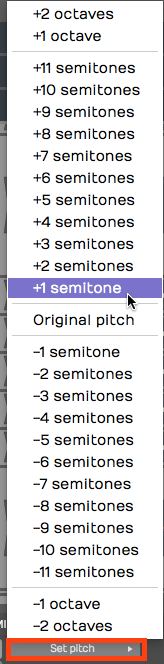
Pitch Shifter, Set Pitch
💡 Tip: You nay find it's usually a lot easier to control the Pitch value by typing in the digits than it is to use the slider.
📝 Note: If you insert Pitch Shifter ahead of a MIDI instrument, it works on the MIDI data stream to transpose notes up or down by the value you set in the Pitch parameter.
DJ EQ and DJ Filter¶
DJ EQ and DJ Filter are two performance-oriented effects built for quick, hands-on tone sweeps.
DJ EQ is a three-band EQ with Low, Mid, and High faders that boost or fully cut each band — turn a band all the way down to kill it completely, the way a DJ drops the bass out of a track. Two crossover controls, Freq 1 and Freq 2, set the frequencies where the bands divide.

The DJ EQ
DJ Filter is the classic single-knob DJ filter. The Freq control sits at Off in the centre: turn it left and a low-pass filter sweeps the highs away; turn it right and a high-pass filter sweeps the lows away. Q sets the resonance at the filter's edge, and Mix blends the result with the dry signal.
📝 Note: The simple Low/High-Pass Filter from earlier versions now lives in the Legacy folder. For everyday filtering reach for the 1-Band Equaliser, or, for sweeps, the DJ Filter.
DJ Tools¶
The DJ Tools — Fader and Crossfader — come with the DJ Mix Tools Expansion (included in the Pro edition, and the same add-on that unlocks Stem Separation). They turn Waveform's tracks into a DJ-style mixer.
Fader is an automatable volume fader with a Position control and an adjustable response Curve, so you can ride or program smooth level changes.

The Fader
Crossfader blends between two stereo sources, A and B. It takes two stereo inputs and produces one stereo output; the Position control fades from full A on the left, through the centre, to full B on the right. Curve shapes the blend — from a smooth equal-power fade to a sharp cut — and Centre Gain sets the level at the midpoint.

The Crossfader
Text Plugin¶
The text plugin is a convenient tool to keep your Edit organized as you record, edit, and mix. Drag Text it to a track, give it a Name and then type in a Description.
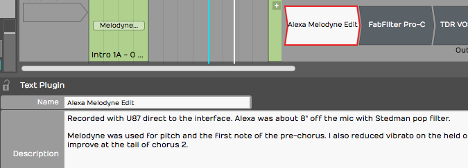
Text Plugin Example
You can type in as much text as you'd like describing how the recording was made, the kind of microphones used, the artist name, and really anything you'd like to make a note of. Text plugin Name appears right in the mixer on the thumbnail. While Text doesn't do anything to your audio path it can help you remember what you were doing when you come back to a project later on.
💡 Tip: You can enable or disable several plugins at once by simply selecting all of them and using the keyboard shortcut F.
Guitar IR¶
📝 Note: Guitar IR and Dual Guitar IR are Pro features, available in Waveform 12 and later.
Guitar IR is a convolution plugin that loads an impulse response (IR) — a short WAV recording that captures the sound of a guitar cabinet, speaker, or room — and stamps that character onto whatever passes through it. It pairs naturally with an amp-simulation plugin: run your DI guitar into the amp sim, then into Guitar IR to model the cabinet and miking.

The Guitar IR
Load a WAV file using the IR field, then shape the result with the controls:
- Gain — output level, from −12 dB to +6 dB.
- Low Cut and High Cut — high-pass and low-pass filters that trim the response, each adjustable from 10 Hz to 20,000 Hz.
- Filter Q — the resonance of the cut filters (0.1 to 14).
- Mix — blends the convolved (wet) signal against the dry input, from 0 to 1.0. It defaults to fully wet (1.0).
- Normalise — evens out the loudness of the loaded IR so swapping impulses doesn't change your level. On by default.
- Trim Silence — removes leading silence from the IR. Off by default.
Dual Guitar IR¶

The Dual Guitar IR
Dual Guitar IR works the same way but hosts two impulse responses (A and B) at once, so you can blend two cabinets or mic positions for a wider, more complex tone. In addition to the controls above it adds:
- Width — spreads the two IRs across the stereo field (defaults to 0.5).
- Delay — offsets one IR against the other by up to 200 ms (defaults to 0), useful for subtle thickening or comb-filter effects.
Artisan Collection¶
The Artisan Collection is a large built-in library of effects — over 180 of them — based on the AirWindows plugins by Chris Johnson. They're grouped into categories in the plugin picker: Delay, Dither, Distortion, Dynamics, Emulation, EQ, Filter, Imaging, Modulation, Reverb, and Utility.
Rather than document each plugin individually, it's enough to know that every Artisan Collection effect shares two common controls — a Dry level and a Wet level — alongside its own specific parameters, so you can always dial in how much of the processed signal is blended with the original.
To use them, enable the collection in Settings > Plugins with the Enable Artisan Collection Plugins option (on by default). After enabling it you'll need to restart Waveform. Once enabled, the effects appear under the Artisan Collection folder in the plugin picker.
📝 Note: The Artisan Collection is a Pro feature.
Master Mix¶
Master Mix is an integrated mastering plugin designed to sit at the end of your signal chain — typically on the master or output bus — to polish a finished mix. It combines several mastering stages in a single plugin.
- Pre EQ and Post EQ — parametric equalizers before and after the dynamics processing, for corrective and final tonal shaping.
- Crossover compression — a 3-band crossover splits the signal into low, mid, and high bands, each feeding its own compressor with a graphical transfer curve you can edit by dragging nodes.
- Dynamics — a final stage offering soft clipping and a noise gate.
- Input and Output gain — independent left/right input and output levels, each with metering.
- DC filter — removes any DC offset from the signal.
You can store up to 100 presets, and use the Mem A / Mem B A/B buttons to compare two settings instantly while you fine-tune the master.
📝 Note: Master Mix is available in the Pro and OEM editions of Waveform.
Saving Presets¶
Most of the built-in plugins allow you to load, save, and delete presets. Once you have your favorite presets saved, you can search for presets on the Presets tab or the Search tab of the Browser.
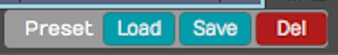
Load, Save, or Delete Presets
As you create presets you can also add tags to make it quick to filter to exactly what you are looking for; Vocal EQ, Guitar Focus, Bass Boost for example.
Moving On¶
Now we've touched on most of the built-in plugins in Waveform. The built-in effects, along with third-party plugins give you tremendous creative potential when composing or mixing.